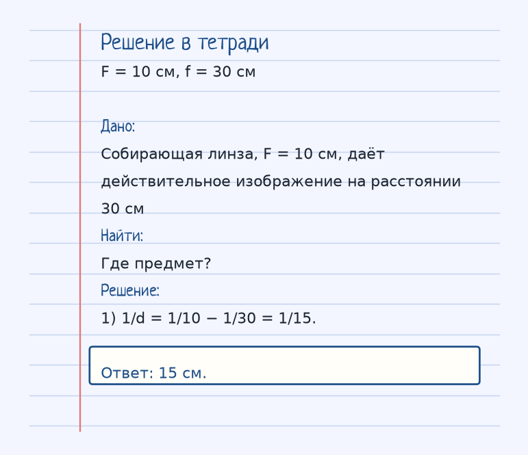
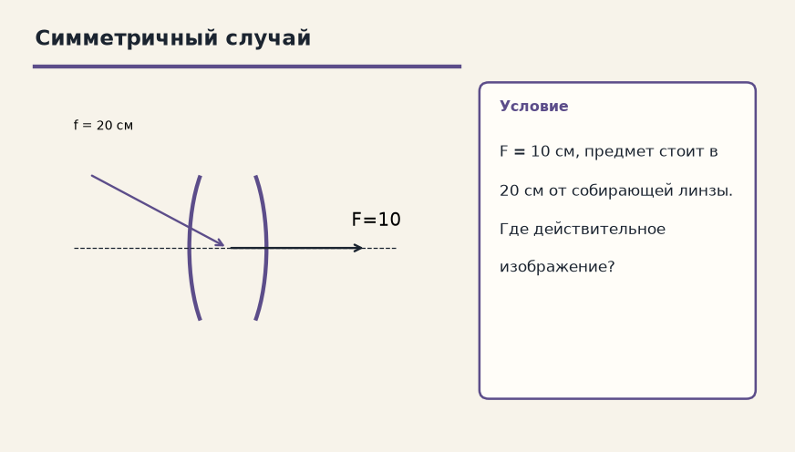

Глаз врёт спокойно. Спроси, куда на самом деле пошёл луч и что было на границе. Ниже — как устроена тема «Формула тонкой линзы (главная)», где обычно спотыкаются, и два разбора до ответа.
Показ к теме. Это условие, не шпаргалка.
Сначала смысл
Связывает расстояние до предмета (d), расстояние до изображения (f) и фокусное расстояние (F).
Формула тонкой линзы связывает три расстояния: 1/F = 1/d + 1/f. d — от предмета до линзы, f — от линзы до изображения, F — фокусное.
Знаки: d > 0, если предмет перед линзой, так бывает в обычных задачах. f > 0 — изображение действительное, по другую сторону, его можно поймать на экране. f < 0 — изображение мнимое, с той же стороны, что и предмет, как в лупе.
В задаче карточки F = 10 см, f = 30 см, изображение действительное: 1/10 = 1/d + 1/30, 1/d = 1/10 − 1/30 = 3/30 − 1/30 = 2/30 = 1/15, d = 15 см. Проектор живёт на той же формуле: отодвинул экран (выросло f) — пододвинь слайд (уменьши d), чтобы снова было резко.
Как решать. Выпиши величины с рисунка к примеру «F = 10 см, f = 30 см». Условие: Собирающая линза, F = 10 см, даёт действительное изображение на расстоянии 30 см. Где предмет? Дальше подставляй их в формулу этой темы и сверяй шаги с решением под картинкой — оно закрыто, пока не попробуешь сам. Второй рисунок, «Симметричный случай», тот же приём на других данных: F = 10 см, предмет стоит в 20 см от собирающей линзы. Где действительное изображение? Если оба примера сходятся, тему можно нести на контрольную.
Как читать формулу
1/F = 1/d + 1/f
d > 0 — предмет перед линзой. f > 0 — действительное изображение, f < 0 — мнимое.
Чтобы осталось в голове
Проектор. Чем дальше от линзы экран (f), тем ближе к линзе должен быть слайд (d) для резкости.
Проектор: чем дальше экран, тем ближе к линзе должен стоять слайд, иначе картинка мыльная.
Где обычно спотыкаются
Не вычитай фокусы в сантиметрах «на глаз». Складываются обратные величины. И не теряй знак f: минус значит мнимое изображение.
Дальше две задачи. Сначала схема. Когда сам набросаешь ход, открой тетрадь — там дано, перевод в СИ, шаги и ответ в рамке.
Разбор 1
F = 10 см, f = 30 см
Собирающая линза, F = 10 см, даёт действительное изображение на расстоянии 30 см. Где предмет?
На схеме только условие. Ответа там нет — его ещё надо получить.
Смотри на порядок, не на красивое число: сначала единицы, потом формула, потом ответ.
Дано. Собирающая линза, F = 10 см, даёт действительное изображение на расстоянии 30 см
В СИ.
Найти. Где предмет?
Решение.
1/d = 1/10 − 1/30 = 1/15.
15 см.

Разбор 2
Симметричный случай
F = 10 см, предмет стоит в 20 см от собирающей линзы. Где действительное изображение?

На схеме только условие. Ответа там нет — его ещё надо получить.
Смотри на порядок, не на красивое число: сначала единицы, потом формула, потом ответ.
Дано. F = 10 см, предмет стоит в 20 см от собирающей линзы